Data Source
Elections Canada Data (https://enr.elections.ca/National.aspx?lang=e)
Load Data
# Prep data 1 - by party
d1 <- dblogr_Election_2019_Party
write.csv(d1, "election_results_party.csv", row.names = F)
| Liberal |
Libs |
157 |
0.464 |
5915950 |
0.331 |
| Conservative |
Cons |
121 |
0.358 |
6155662 |
0.344 |
| Bloc Québécois |
Bloc |
32 |
0.095 |
1376135 |
0.077 |
| New Democratic Party |
NDP |
24 |
0.071 |
2849214 |
0.159 |
| Green Party |
Green |
3 |
0.009 |
1162361 |
0.065 |
| People’s Party |
PPC |
0 |
0.000 |
292703 |
0.016 |
| Independent |
Ind |
1 |
0.003 |
71854 |
0.004 |
| Animal Protection Party |
APP |
0 |
0.000 |
4407 |
0.000 |
| Canada’s Fourth Front |
CFF |
0 |
0.000 |
700 |
0.000 |
| Christian Heritage Party |
CHP |
0 |
0.000 |
18816 |
0.001 |
| Communist |
Comm |
0 |
0.000 |
4248 |
0.000 |
| Libertarian |
Libert |
0 |
0.000 |
8281 |
0.000 |
| ML |
ML |
0 |
0.000 |
4492 |
0.000 |
| National Citizens Alliance |
NCA |
0 |
0.000 |
507 |
0.000 |
| Nationalist |
Nat |
0 |
0.000 |
284 |
0.000 |
| No Affiliation |
None |
0 |
0.000 |
1766 |
0.000 |
| Parti Rhinocéros Party |
PRP |
0 |
0.000 |
9567 |
0.000 |
| PC Party |
PCP |
0 |
0.000 |
1556 |
0.000 |
| Pour l’Indépendance du Québec |
Pl |
0 |
0.000 |
3792 |
0.000 |
| Radical Marijuana |
RM |
0 |
0.000 |
852 |
0.000 |
| Stop Climate Change |
SCC |
0 |
0.000 |
296 |
0.000 |
| UPC |
UPC |
0 |
0.000 |
612 |
0.000 |
| VCP |
VCP |
0 |
0.000 |
6209 |
0.000 |
Table 1: 2019 Federal Election Results Summary (d1).
# Prep data 2 - by district
provs <- c("British Columbia", "Alberta"," Saskatchewan", "Manitoba",
"Yukon", "Northwest Territories", "Nunavut")
d2 <- dblogr_Election_2019_District %>%
mutate(`Percent of Votes` = round(`Percent of Votes`),
SubRegion = ifelse(Area %in% provs, "Western Canada", "Eastern Canada"),
SubRegion = factor(SubRegion, levels=c("Western Canada","Eastern Canada"))) %>%
select(SubRegion, everything())
write.csv(d2, "election_results_district.csv", row.names = F)
## 'data.frame': 2146 obs. of 13 variables:
## $ SubRegion : Factor w/ 2 levels "Western Canada",..: 2 2 2 2 2 2 2 2 2 2 ...
## $ Area : Factor w/ 13 levels "British Columbia",..: 10 10 10 10 10 10 10 10 10 10 ...
## $ Area_Short : Factor w/ 13 levels "BC","AB","SK",..: 10 10 10 10 10 10 10 10 10 10 ...
## $ Locality : chr "Maritimes" "Maritimes" "Maritimes" "Maritimes" ...
## $ District Number : num 10001 10001 10001 10001 10002 ...
## $ District : chr "Avalon" "Avalon" "Avalon" "Avalon" ...
## $ Surname : chr "Chapman" "Malone" "McDonald" "Movelle" ...
## $ Given Name : chr "Matthew" "Greg" "Kenneth" "Lea Mary" ...
## $ Party : chr "Conservative" "Green Party" "Liberal" "New Democratic Party" ...
## $ Party_Short : chr "Cons" "Green" "Libs" "NDP" ...
## $ Votes : num 12855 2215 19122 7142 3855 ...
## $ Percent of Votes: num 31 5 46 17 12 3 46 40 35 12 ...
## $ Total Votes : num 41731 41731 41731 41731 32788 ...
Table 2: 2019 Federal Election Results by District (d2).
Prepare Data
# Summarise "Other" parties
parties <- c("Libs", "Cons", "NDP", "Bloc", "Green", "PPC", "Other")
wings <- c("Left", "Right", "Left", "Other", "Left", "Right", "Other")
colors <- c("darkred", "darkblue", "orange", "lightblue", "darkgreen", "purple", "grey")
# d1a = Summarise "Other" parties for d1
xx <- d1 %>% filter(!Party_Short %in% parties) %>%
mutate(Party = "Other", Party_Short = "Other") %>%
group_by(Party, Party_Short) %>%
summarise_all(funs(sum))
d1a <- d1 %>% filter(Party_Short %in% parties) %>% bind_rows(xx) %>%
mutate(`Percent of Districts` = 100 * `Percent of Districts`,
`Percent of Votes` = 100 * `Percent of Votes`,
Party_Short = factor(Party_Short, levels = parties),
Wing = plyr::mapvalues(Party_Short, parties, wings),
Wing = factor(Wing, levels = c("Left", "Right", "Other")))
# d2a = Summarise "Other" parties for d2
other_parties <- d2 %>% filter(!Party_Short %in% parties) %>%
group_by(Party) %>% summarise(Votes = sum(Votes)) %>%
arrange(Votes) %>% pull(Party) %>% unique() %>% rev()
xx <- d2 %>% filter(Party %in% other_parties) %>%
group_by(SubRegion, Area, Area_Short, Locality, `District Number`, District) %>%
summarise(Votes = sum(Votes), `Percent of Votes` = sum(`Percent of Votes`),
`Total Votes` = max(`Total Votes`)) %>%
mutate(Party = "Other", Party_Short = "Other")
d2a <- d2 %>% filter(Party_Short %in% parties) %>% bind_rows(xx)
# d3 = Results for "Other" parties
d3 <- d2 %>% filter(Party %in% other_parties) %>% group_by(Party) %>%
summarise(Votes = sum(Votes)) %>%
mutate(Party = factor(Party, levels = other_parties))
# Create functions
reFactor <- function(x, orderParty = "Conservative", myParties = parties) {
district_order <- x %>% filter(Party == orderParty) %>%
arrange(Votes) %>% pull(District) %>% rev()
x %>% mutate(Party_Short = factor(Party_Short, levels = myParties),
District = factor(District, levels = district_order))
}
summariseResults <- function(x, myParties = parties, myWings = wings) {
y <- x %>% group_by(District) %>% top_n(1, Votes) %>% ungroup() %>%
group_by(Party) %>% count()
x <- x %>% group_by(Party, Party_Short) %>% summarise(Votes = sum(Votes)) %>%
left_join(y, by = "Party") %>%
rename(Districts = n) %>%
mutate(Districts = ifelse(is.na(Districts), 0, Districts))
x <- x %>%
mutate(`Percent of Districts` = round(100 * Districts / sum(x$Districts), 1),
`Percent of Votes` = round(100 * Votes / sum(x$Votes), 1),
Wing = plyr::mapvalues(Party_Short, myParties, myWings),
Wing = factor(Wing, levels = c("Left", "Right", "Other")),
Party_Short = factor(Party_Short, levels = parties))
}
Provincial Results
Electoral Map
# Prep data
xx <- d2 %>% group_by(District) %>% top_n(1, Votes) %>% ungroup() %>%
mutate(Party_Short = factor(Party_Short, levels = c(parties[1:5], "Ind")))
xx <- mapcan(boundaries = ridings, type = standard) %>%
left_join(xx, by = c("riding_code"="District Number"))
# Plot
mp <- ggplot(xx, aes(x = long, y = lat, group = group, fill = Party_Short)) +
geom_polygon(color = "white", size = 0.1) +
coord_fixed() + theme_mapcan() +
theme(legend.position = "none") +
scale_fill_manual(name = "Party", values = colors) +
labs(title = "2019 Canadian Federal Election Results",
caption = "\xa9 www.dblogr.com/ | Data: Elections Canada")
ggsave("canada/election_2019_00_map.png", mp, width = 6, height = 4)
Districts
# Prep data
xx <- d2 %>% group_by(District) %>% top_n(1, Votes) %>% ungroup() %>%
mutate(Party_Short = factor(Party_Short, levels = rev(c(parties[1:5], "Ind"))))
# Plot
mp <- ggplot(xx, aes(x = Area_Short, fill = Party_Short)) +
geom_bar(position = "stack", color = "black") +
scale_fill_manual(name = NULL, values = colors[c(7,5:1)]) +
theme(axis.text.x = element_text(angle = 90, hjust = 1, vjust = 0.5)) +
theme_dblogr() +
labs(title = "2019 Federal Election Results",
caption = "\xa9 www.dblogr.com/ | Data: Elections Canada",
y = "Districts", x = NULL)
ggsave("canada/election_2019_00_provinces.png", mp, width = 6, height = 4)
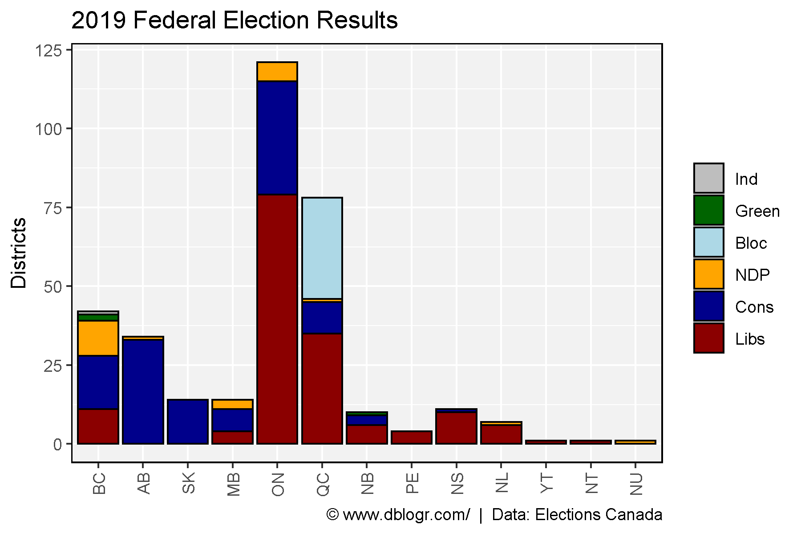
# Prep data
xx <- d2a %>% group_by(Area_Short, Party_Short) %>%
summarise(Votes = sum(Votes)) %>% ungroup() %>%
mutate(Party_Short = factor(Party_Short, levels = parties))
# Plot
mp <- ggplot(xx, aes(x = Area_Short, y = Votes / 1000000, fill = Party_Short)) +
geom_bar(stat = "identity", position = "dodge", color = "black") +
scale_fill_manual(name = NULL, values = colors) +
theme(axis.text.x = element_text(angle = 90, hjust = 1, vjust = 0.5)) +
theme_dblogr() +
labs(title = "2019 Federal Election Results",
caption = "\xa9 www.dblogr.com/ | Data: Elections Canada",
y = "Million Votes", x = NULL)
ggsave("canada/election_2019_00_provinces_votes.png", mp, width = 6, height = 4)
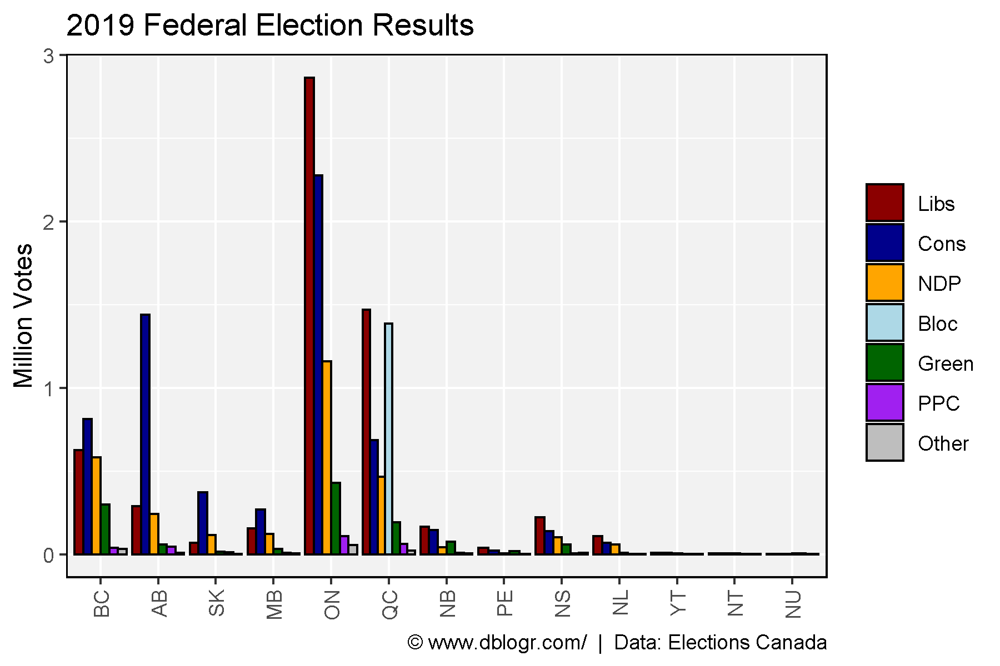
West vs East
Votes
# Prep data
xx <- d2a %>% group_by(SubRegion, Party_Short) %>%
summarise(Votes = sum(Votes, na.rm = T)) %>%
mutate(Party_Short = factor(Party_Short, levels = parties),
Total = ifelse(SubRegion == "Western Canada",
sum(.$Votes[.$SubRegion == "Western Canada"]),
sum(.$Votes[.$SubRegion == "Eastern Canada"])),
Total = round(Total / 1000000, 1))
# Plot
mp <- ggplot(xx, aes(x = Party_Short, y = Votes / 1000000)) +
geom_bar(stat = "identity", color = "black", aes(fill = Party_Short),
position = position_dodge(preserve = "single")) +
geom_label(aes(label = round(Votes / 1000000, 1)), vjust = -0.1) +
facet_grid(. ~ SubRegion + paste("Million Votes =", Total)) +
scale_fill_manual(values = colors) +
scale_y_continuous(limits = c(0, 5.2)) +
theme_dblogr(rotx = T, legend.position = "none") +
labs(title = "2019 Canadian Federal Election Results",
y = "Million Votes", x = NULL,
caption = "\xa9 www.dblogr.com/ | Data: Elections Canada")
ggsave("canada/election_2019_00_west_east_votes.png", mp, width = 6, height = 4)
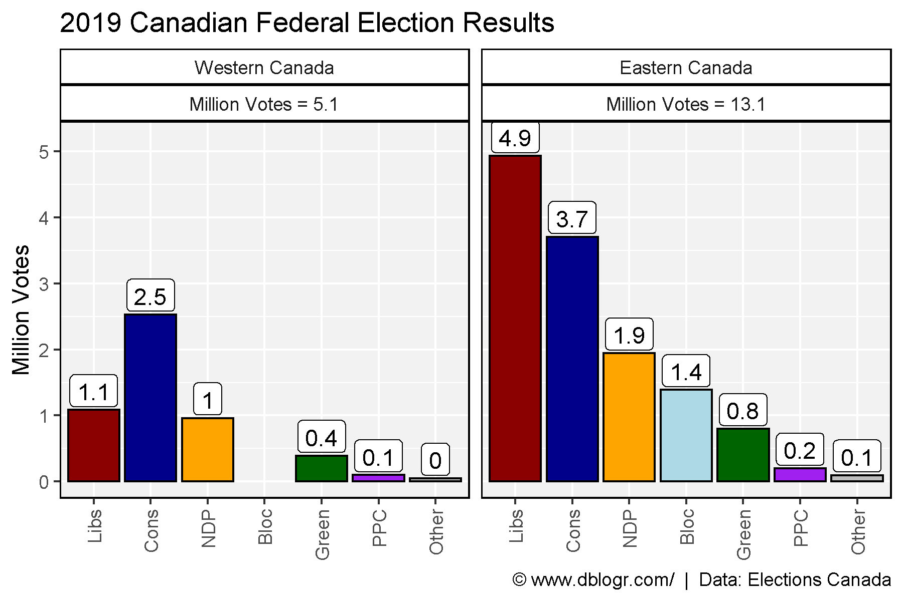
Districts
# Prep data
xx <- d2a %>% group_by(SubRegion, District) %>% top_n(1, Votes) %>% ungroup() %>%
group_by(SubRegion, Party_Short) %>% count() %>% ungroup()
xx <- xx %>%
mutate(Party_Short = factor(Party_Short, levels = parties),
Total = ifelse(SubRegion == "Western Canada",
sum(.$n[.$SubRegion == "Western Canada"]),
sum(.$n[.$SubRegion == "Eastern Canada"])))
# Plot
mp <- ggplot(xx, aes(x = Party_Short, y = n)) +
geom_bar(stat = "identity", color = "black", aes(fill = Party_Short),
position = position_dodge(preserve = "single")) +
geom_label(aes(label = n), vjust = -0.1) +
facet_grid(.~SubRegion + paste("Total Districts =", Total)) +
scale_fill_manual(values = colors[-6]) +
scale_y_continuous(limits = c(0, 148)) +
theme_dblogr(rotx = T, legend.position = "none") +
labs(title = "2019 Canadian Federal Election Results",
y = "Districts", x = NULL,
caption = "\xa9 www.dblogr.com/ | Data: Elections Canada")
ggsave("canada/election_2019_00_west_east_districts.png", mp, width = 6, height = 4)
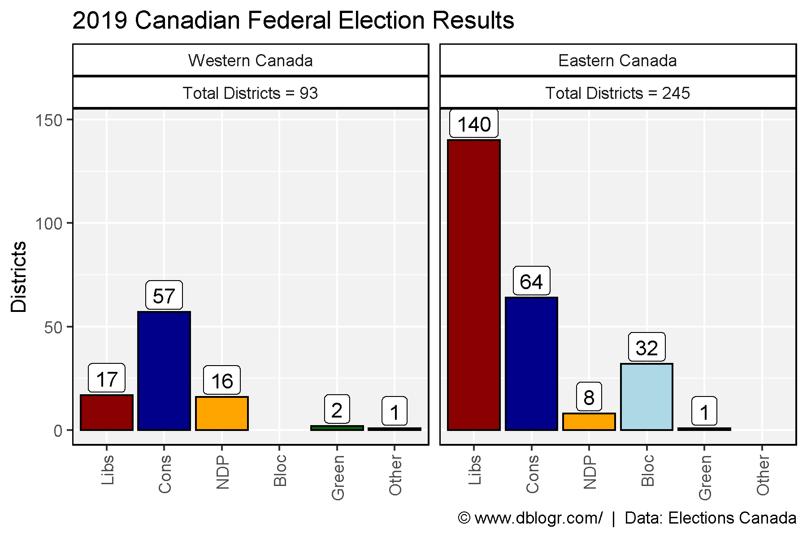
Votes
# Plot votes by party
gg_Votes <- function(x, title = NULL, ymax = 15) {
ggplot(x, aes(x = Party_Short, y = Votes / 100000)) +
geom_bar(aes(fill = Party_Short), stat = "identity", color = "black", alpha = 0.8) +
geom_label(aes(label = paste0(Votes, "\n", `Percent of Votes`, "%"), vjust = -0.1)) +
scale_fill_manual(values = colors) +
coord_cartesian(ylim = c(0, ymax)) +
theme_dblogr(legend.position = "none", rotx = T) +
labs(title = title, y = "Votes (x 100,000)", x = NULL,
subtitle = "2019 Federal Election Results",
caption = "\xa9 www.dblogr.com/ | Data: Elections Canada")
}
Canada
# Plot
mp <- gg_Votes(d1a, ymax = 74)
ggsave("canada/election_2019_01_ca.png", mp, width = 6, height = 4)

Eastern Canada
# Prep data
xx <- d2a %>% filter(SubRegion == "Eastern Canada") %>%
reFactor() %>% summariseResults()
# Plot
mp <- gg_Votes(xx, "Eastern Canada", ymax = 61)
ggsave("eastern_canada/election_2019_01_ce.png", mp, width = 6, height = 4)
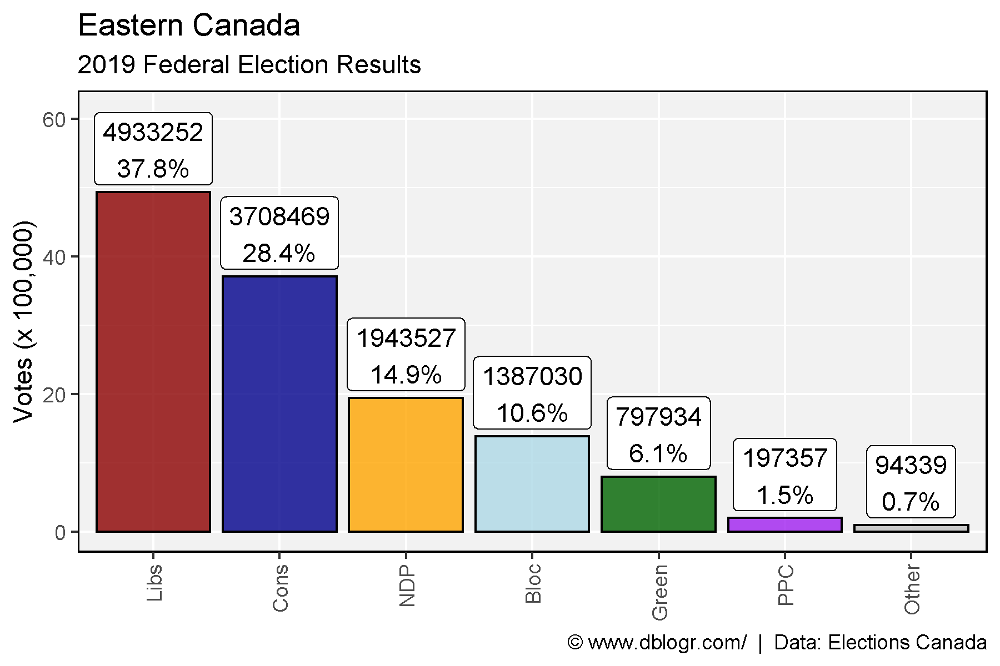
Western Canada
# Prep data
colors <- c("darkred", "darkblue", "orange", "darkgreen", "purple", "grey")
xx <- d2a %>% filter(SubRegion == "Western Canada") %>%
reFactor() %>% summariseResults()
# Plot
mp <- gg_Votes(xx, "Western Canada", ymax = 31)
ggsave("western_canada/election_2019_01_cw.png", mp, width = 6, height = 4)
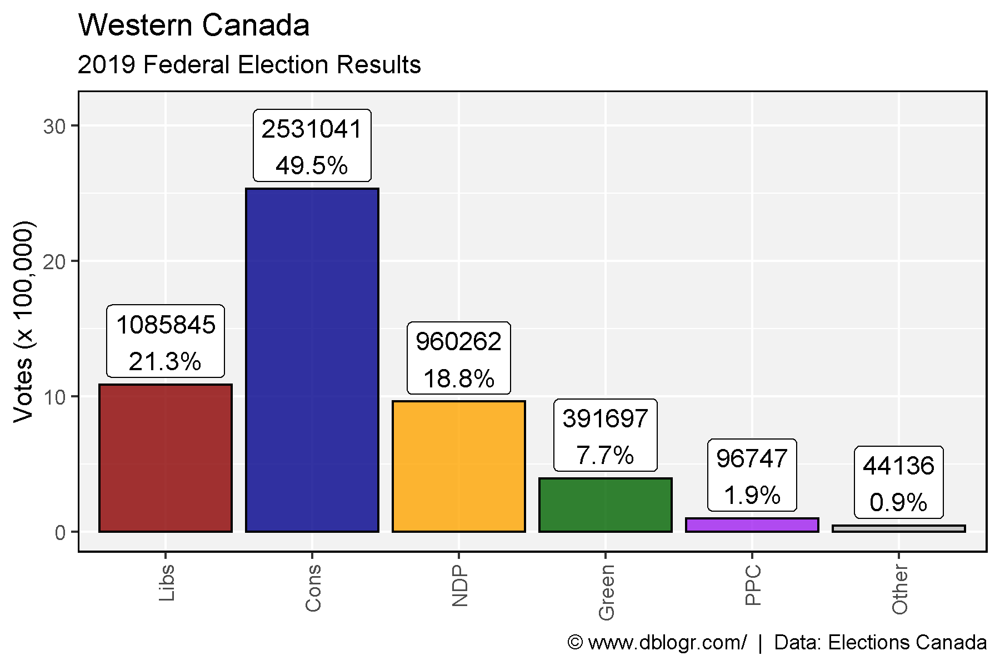
Prairie Agricultureal Districts
# Prep data
areas <- c("Rural Alberta", "Rural Saskatchewan", "Rural Manitoba")
nonag <- c("Banff--Airdrie", "Foothills", "Yellowhead",
"Fort McMurray--Cold Lak", "Grande Prairie--Mackenzie",
"Desnethé--Missinippi--Churchill River",
"Churchill--Keewatinook Aski")
xx <- d2a %>%
filter(Locality %in% areas) %>%
mutate(Locality = factor(Locality, levels = areas)) %>%
filter(!District %in% nonag) %>%
reFactor() %>% summariseResults()
# Plot
mp <- gg_Votes(xx, "Agricultural Prairie Districts", ymax = 10.75)
ggsave("prairie_ag/election_2019_01_ag.png", mp, width = 6, height = 4)
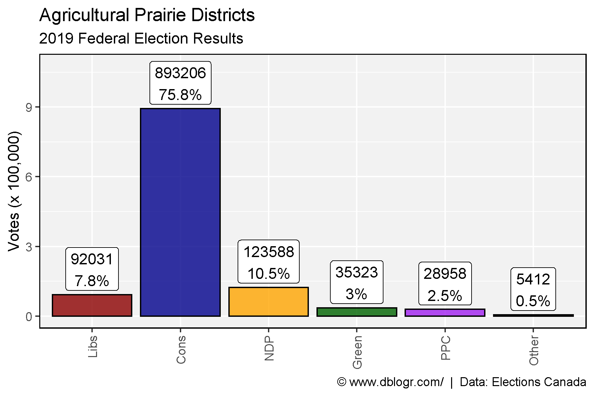
British Columbia
# Prep data
xx <- d2a %>% filter(Area == "British Columbia") %>%
reFactor() %>% summariseResults()
# Plot
mp <- gg_Votes(xx, "British Columbia", ymax = 10)
ggsave("british_columbia/election_2019_01_bc.png", mp, width = 6, height = 4)
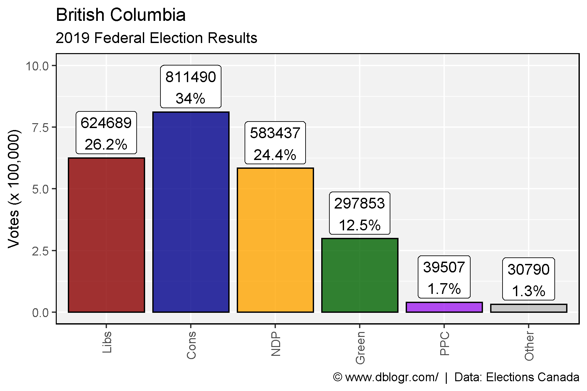
Alberta
# Prep data
xx <- d2a %>% filter(Area == "Alberta") %>%
reFactor() %>% summariseResults()
# Plot
mp <- gg_Votes(xx, "Alberta", ymax = 17.6)
ggsave("alberta/election_2019_01_ab.png", mp, width = 6, height = 4)

Saskatchewan
# Prep data
xx <- d2a %>% filter(Area == "Saskatchewan") %>%
reFactor() %>% summariseResults()
# Plot
mp <- gg_Votes(xx, "Saskatchewan", ymax = 4.5)
ggsave("saskatchewan/election_2019_01_sk.png", mp, width = 6, height = 4)
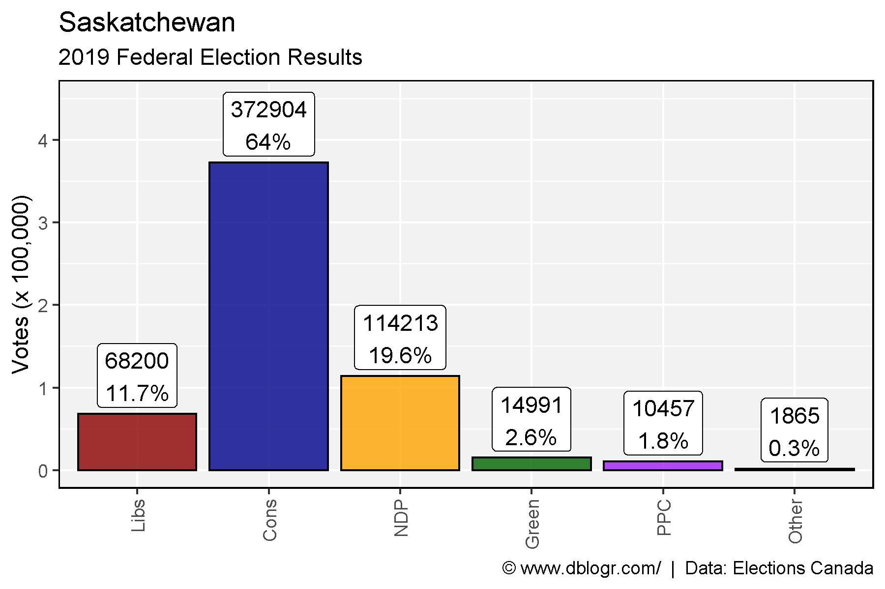
Manitoba
# Prep data
xx <- d2a %>% filter(Area == "Manitoba") %>%
reFactor() %>% summariseResults()
# Plot
mp <- gg_Votes(xx, "Manitoba", ymax = 3.3)
ggsave("manitoba/election_2019_01_mb.png", mp, width = 6, height = 4)
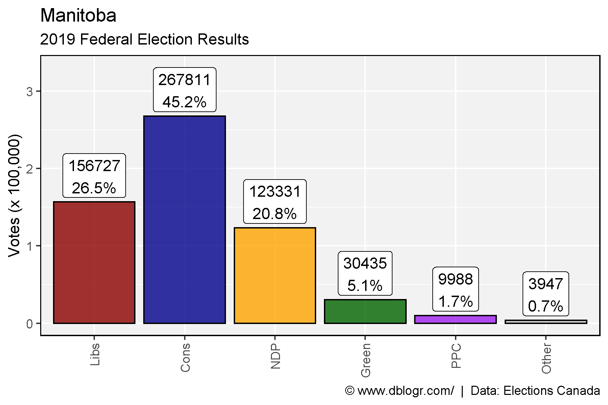
Ontario
# Prep data
xx <- d2a %>% filter(Area == "Ontario") %>%
reFactor() %>% summariseResults()
# Plot
mp <- gg_Votes(xx, "Ontario", ymax = 35)
ggsave("ontario/election_2019_01_on.png", mp, width = 6, height = 4)
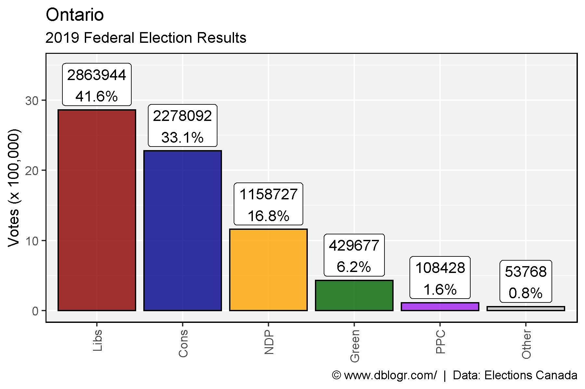
Quebec
# Prep data
colors <- c("darkred", "darkblue", "orange", "lightblue", "darkgreen", "purple", "grey")
xx <- d2a %>% filter(Area == "Quebec") %>%
reFactor() %>% summariseResults()
# Plot
mp <- gg_Votes(xx, "Quebec", ymax = 18)
ggsave("quebec/election_2019_01_qc.png", mp, width = 6, height = 4)
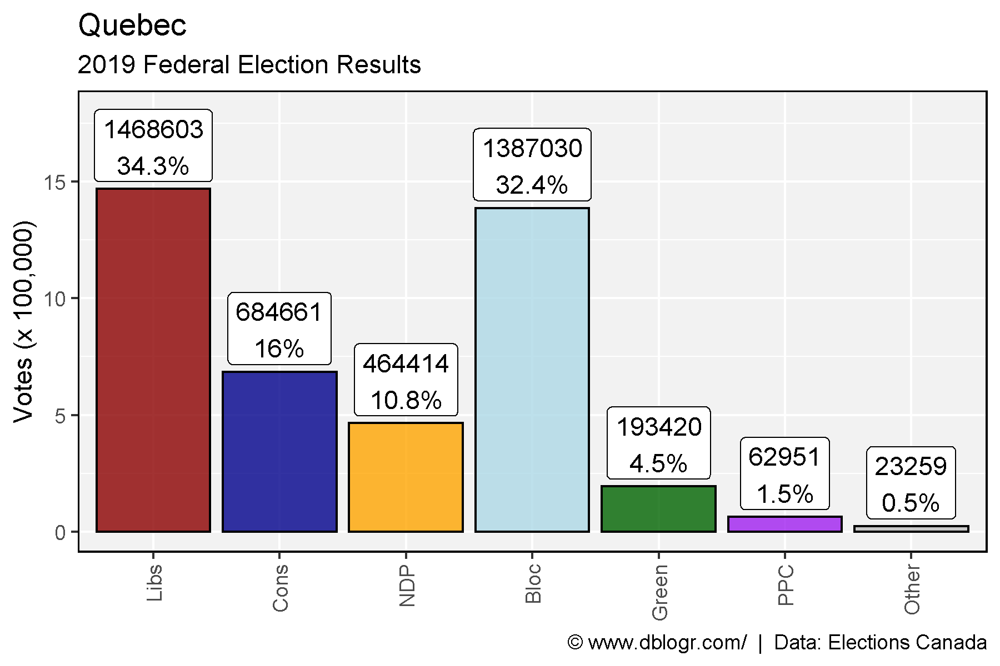
New Brunswick
# Prep data
colors <- c("darkred", "darkblue", "orange", "darkgreen", "purple", "grey")
xx <- d2a %>% filter(Area == "New Brunswick") %>%
reFactor() %>% summariseResults()
# Plot
mp <- gg_Votes(xx, "New Brunswick", ymax = 2.05)
ggsave("new_brunswick/election_2019_01_nb.png", mp, width = 6, height = 4)
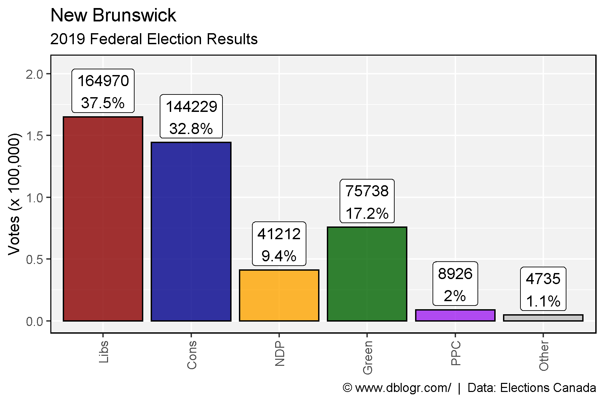
Nova Scotia
# Prep data
xx <- d2a %>% filter(Area == "Nova Scotia") %>%
reFactor() %>% summariseResults()
# Plot
mp <- gg_Votes(xx, "Nova Scotia", ymax = 2.7)
ggsave("nova_scotia/election_2019_01_ns.png", mp, width = 6, height = 4)
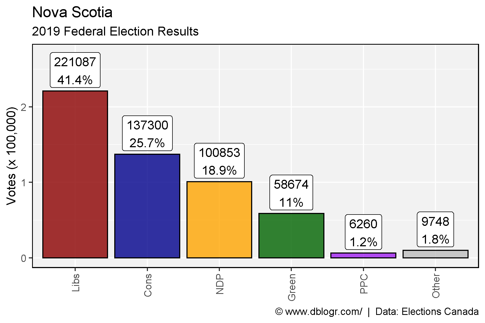
Prince Edward Island
# Prep data
colors <- c("darkred", "darkblue", "orange", "darkgreen", "grey")
xx <- d2a %>% filter(Area == "Prince Edward Island") %>%
reFactor() %>% summariseResults()
# Plot
mp <- gg_Votes(xx, "Prince Edward Island", ymax = 0.46)
ggsave("prince_edward_island/election_2019_01_pe.png", mp, width = 6, height = 4)
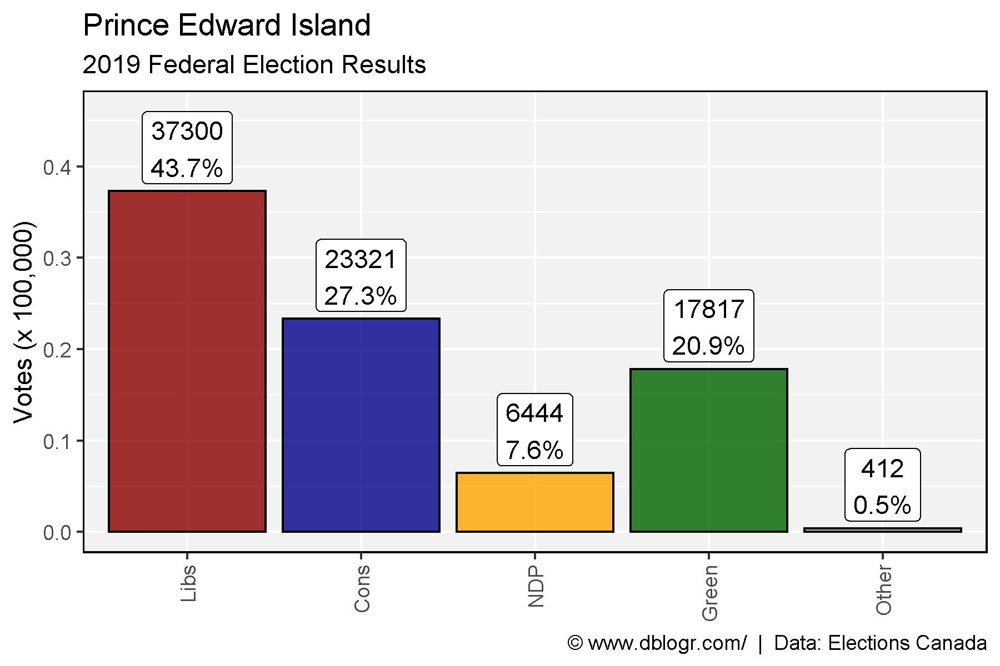
Newfoundland and Labrador
# Prep data
colors <- c("darkred", "darkblue", "orange", "darkgreen", "purple", "grey")
xx <- d2a %>% filter(Area == "Newfoundland and Labrador") %>%
reFactor() %>% summariseResults()
# Plot
mp <- gg_Votes(xx, "Newfoundland and Labrador", ymax = 1.35)
ggsave("Newfoundland_Labrador/election_2019_01_nl.png", mp, width = 6, height = 4)

Yukon
# Prep data
xx <- d2a %>% filter(Area == "Yukon") %>%
reFactor() %>% summariseResults()
# Plot
mp <- gg_Votes(xx, "Yukon", ymax = 0.086)
ggsave("yukon/election_2019_01_yt.png", mp, width = 6, height = 4)
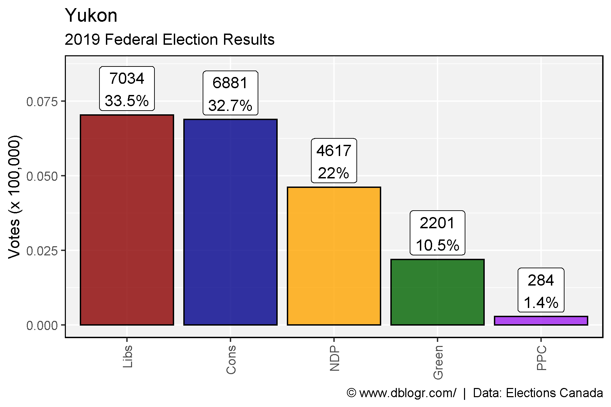
Northwest Territories
# Prep data
xx <- d2a %>% filter(Area == "Northwest Territories") %>%
reFactor() %>% summariseResults()
# Plot
mp <- gg_Votes(xx, "Northwest Territories", ymax = 0.079)
ggsave("northwest_territories/election_2019_01_nt.png", mp, width = 6, height = 4)

Nunavut
# Prep data
xx <- d2a %>% filter(Area == "Nunavut") %>%
reFactor() %>% summariseResults()
# Plot
mp <- gg_Votes(xx, "Nunavut", ymax = 0.047)
ggsave("nunavut/election_2019_01_nu.png", mp, width = 6, height = 4)
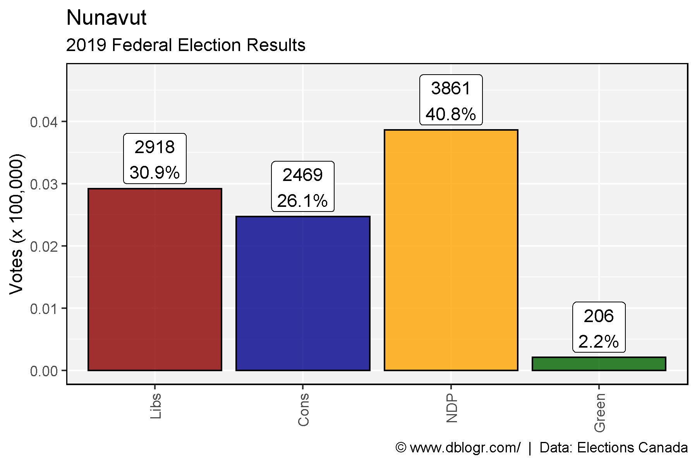
Left vs Right
# Plot votes by wing (left vs right)
gg_LeftRight <- function(x, title = NULL) {
# Caclculate percents
xL <- round(100 * sum(x$Votes[x$Wing == "Left"] / sum(x$Votes)), 1)
xR <- round(100 * sum(x$Votes[x$Wing == "Right"] / sum(x$Votes)), 1)
xO <- round(100 * sum(x$Votes[x$Wing == "Other"] / sum(x$Votes)), 1)
# Plot
ggplot(x, aes(x = Wing, y = Votes / 100000, fill = Party_Short)) +
geom_bar(stat = "identity", color = "black", alpha = 0.8) +
geom_text(x = 1, y = sum(x$Votes[x$Wing == "Left"]) / 100000,
label = paste(xL, "%"), vjust = 1.5, color = "white") +
geom_text(x = 2, y = sum(x$Votes[x$Wing == "Right"]) / 100000,
label = paste(xR, "%"), vjust = 1.5, color = "white") +
geom_text(x = 3, y = sum(x$Votes[x$Wing == "Other"]) / 100000,
label = paste(xO, "%"), vjust = -0.5, color = "black") +
scale_fill_manual(values = colors) +
theme_dblogr(rotx = T) +
labs(title = title, y = "Votes (x 100,000)", x = NULL,
subtitle = "2019 Federal Election Results",
caption = "\xa9 www.dblogr.com/ | Data: Elections Canada")
}
Canada
# Plot
colors <- c("darkred", "darkblue", "orange", "lightblue", "darkgreen", "purple", "grey")
mp <- gg_LeftRight(d1a)
ggsave("canada/election_2019_02_ca.png", mp, width = 6, height = 4)
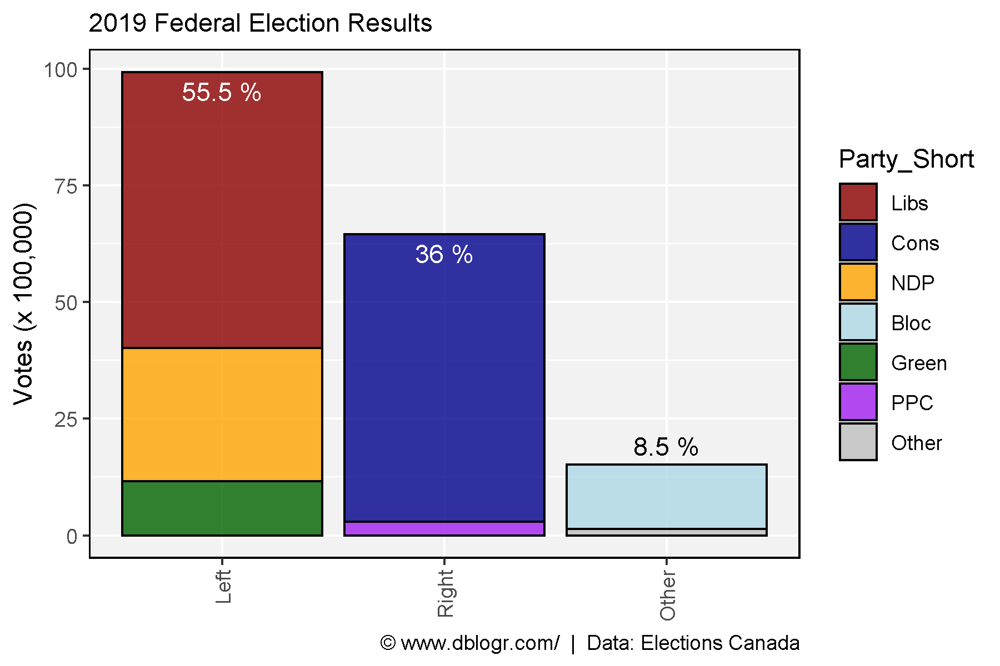
Eastern Canada
# Prep data
xx <- d2a %>% filter(SubRegion == "Eastern Canada") %>%
reFactor() %>% summariseResults()
# Plot
mp <- gg_LeftRight(xx, "Eastern Canada")
ggsave("eastern_canada/election_2019_02_ce.png", mp, width = 6, height = 4)
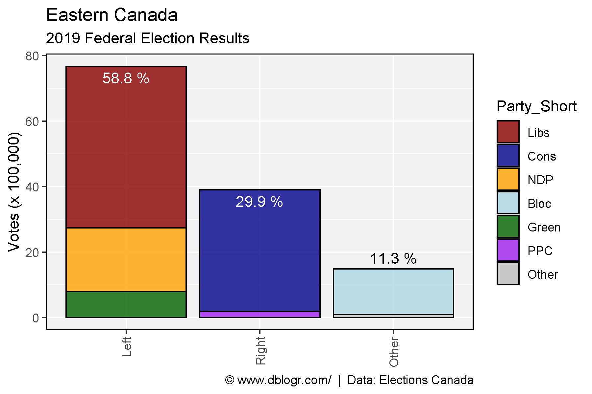
Western Canada
# Prep data
colors <- c("darkred", "darkblue", "orange", "darkgreen", "purple", "grey")
xx <- d2a %>% filter(SubRegion == "Western Canada") %>%
reFactor() %>% summariseResults()
# Plot
mp <- gg_LeftRight(xx, "Western Canada")
ggsave("western_canada/election_2019_02_cw.png", mp, width = 6, height = 4)
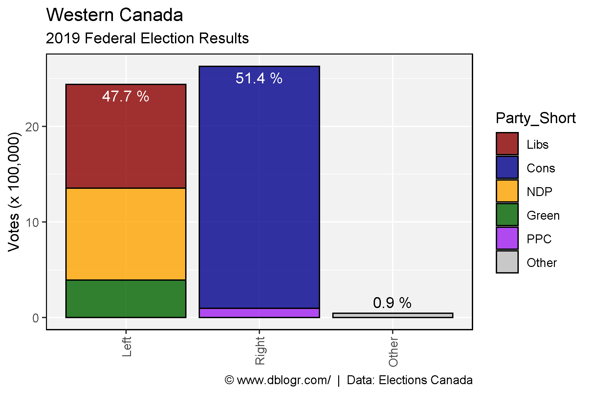
Prairie Agricultureal Districts
# Prep data
areas <- c("Rural Alberta", "Rural Saskatchewan", "Rural Manitoba")
nonag <- c("Banff--Airdrie", "Foothills", "Yellowhead",
"Fort McMurray--Cold Lak", "Grande Prairie--Mackenzie",
"Desnethé--Missinippi--Churchill River",
"Churchill--Keewatinook Aski")
xx <- d2a %>%
filter(Locality %in% areas) %>%
mutate(Locality = factor(Locality, levels = areas)) %>%
filter(!District %in% nonag) %>%
reFactor() %>% summariseResults()
# Plot
mp <- gg_LeftRight(xx, "Agricultural Prairie Districts")
ggsave("prairie_ag/election_2019_02_ag.png", mp, width = 6, height = 4)
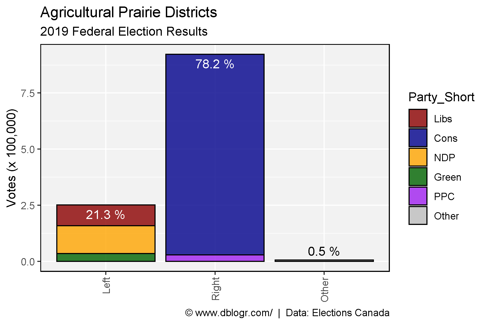
British Columbia
# Prep data
xx <- d2a %>% filter(Area == "British Columbia") %>%
reFactor() %>% summariseResults()
# Plot
mp <- gg_LeftRight(xx, "British Columbia")
ggsave("british_columbia/election_2019_02_bc.png", mp, width = 6, height = 4)
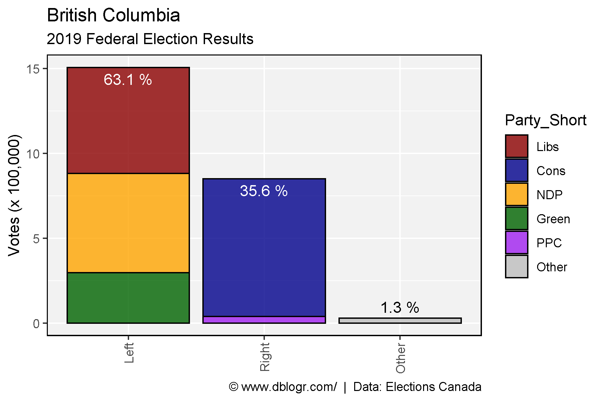
Alberta
# Prep data
xx <- d2a %>% filter(Area == "Alberta") %>%
reFactor() %>% summariseResults()
# Plot
mp <- gg_LeftRight(xx, "2019 Federal Election Results in Alberta")
ggsave("alberta/election_2019_02_ab.png", mp, width = 6, height = 4)

Saskatchewan
# Prep data
xx <- d2a %>% filter(Area == "Saskatchewan") %>%
reFactor() %>% summariseResults()
# Plot
mp <- gg_LeftRight(xx, "Saskatchewan")
ggsave("saskatchewan/election_2019_02_sk.png", mp, width = 6, height = 4)
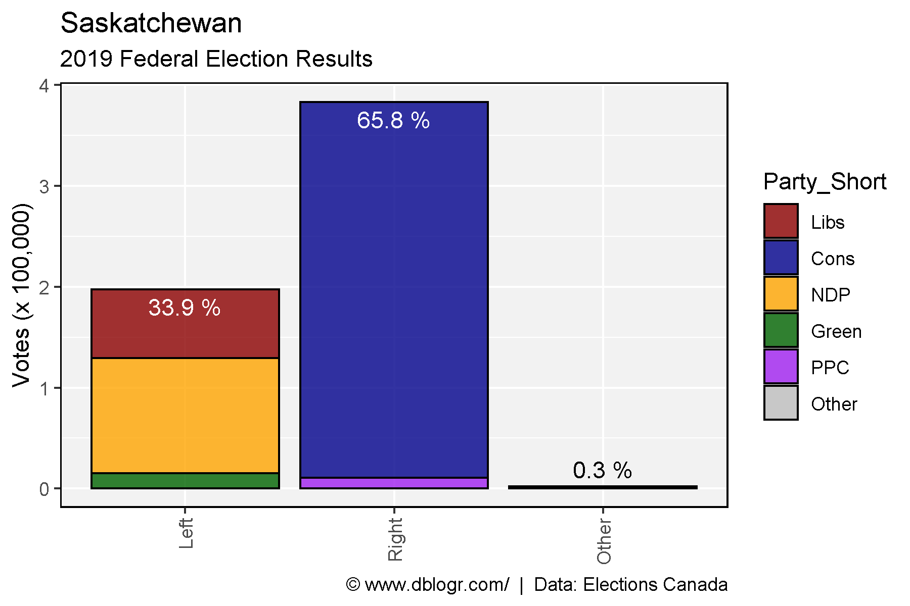
Manitoba
# Prep data
xx <- d2a %>% filter(Area == "Manitoba") %>%
reFactor() %>% summariseResults()
# Plot
mp <- gg_LeftRight(xx, "Manitoba")
ggsave("manitoba/election_2019_02_mb.png", mp, width = 6, height = 4)
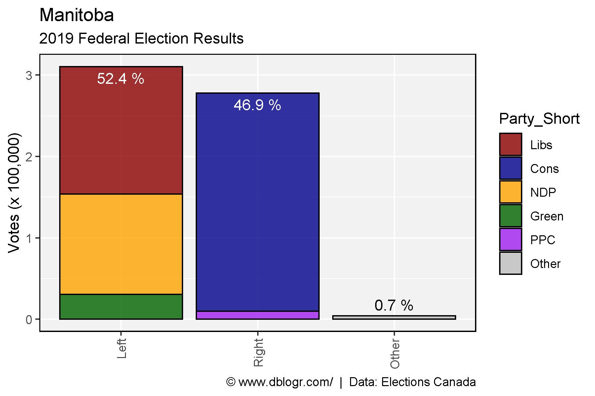
Ontario
# Prep data
xx <- d2a %>% filter(Area == "Ontario") %>%
reFactor() %>% summariseResults()
# Plot
mp <- gg_LeftRight(xx, "Ontario")
ggsave("ontario/election_2019_02_on.png", mp, width = 6, height = 4)
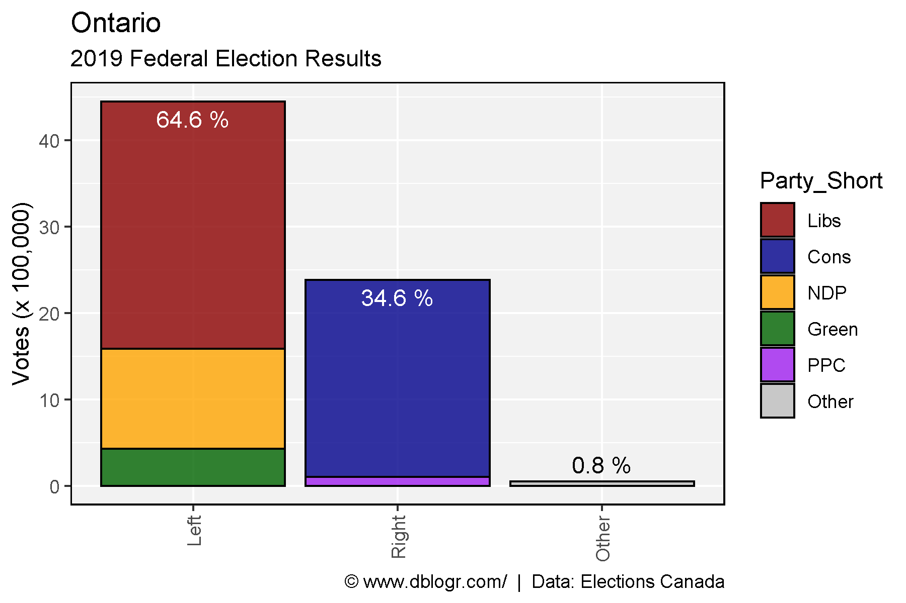
Quebec
# Prep data
colors <- c("darkred", "darkblue", "orange", "lightblue", "darkgreen", "purple", "grey")
xx <- d2a %>% filter(Area == "Quebec") %>%
reFactor() %>% summariseResults()
# Plot
mp <- gg_LeftRight(xx, "Quebec")
ggsave("quebec/election_2019_02_qc.png", mp, width = 6, height = 4)
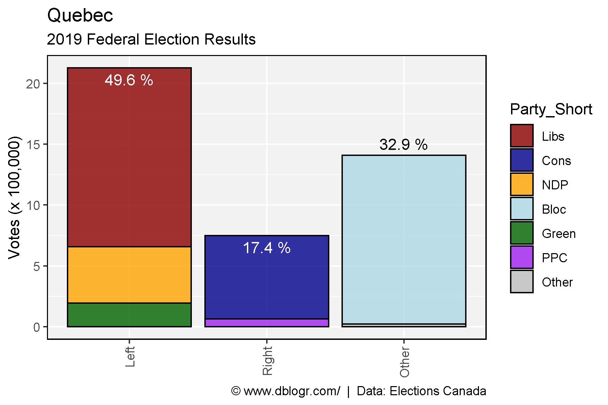
New Brunswick
# Prep data
colors <- c("darkred", "darkblue", "orange", "darkgreen", "purple", "grey")
xx <- d2a %>% filter(Area == "New Brunswick") %>%
reFactor() %>% summariseResults()
# Plot
mp <- gg_LeftRight(xx, "New Brunswick")
ggsave("new_brunswick/election_2019_02_nb.png", mp, width = 6, height = 4)
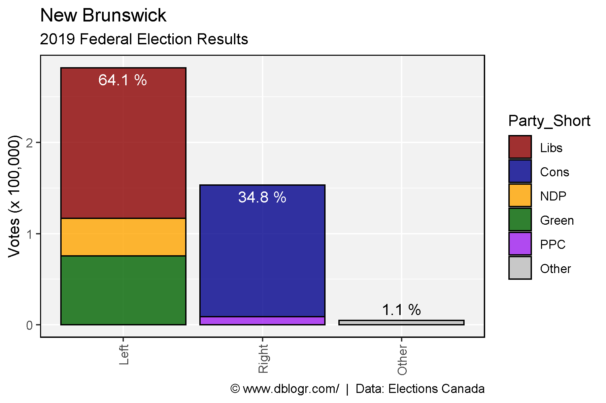
Nova Scotia
# Prep data
xx <- d2a %>% filter(Area == "Nova Scotia") %>%
reFactor() %>% summariseResults()
# Plot
mp <- gg_LeftRight(xx, "Nova Scotia")
ggsave("nova_scotia/election_2019_02_ns.png", mp, width = 6, height = 4)
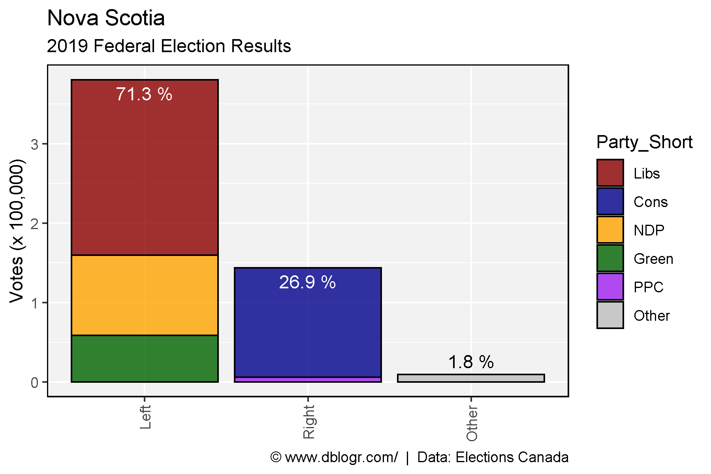
Prince Edward Island
# Prep data
colors <- c("darkred", "darkblue", "orange", "darkgreen", "grey")
xx <- d2a %>% filter(Area == "Prince Edward Island") %>%
reFactor() %>% summariseResults()
# Plot
mp <- gg_LeftRight(xx, "Prince Edward Island")
ggsave("prince_edward_island/election_2019_02_pe.png", mp, width = 6, height = 4)
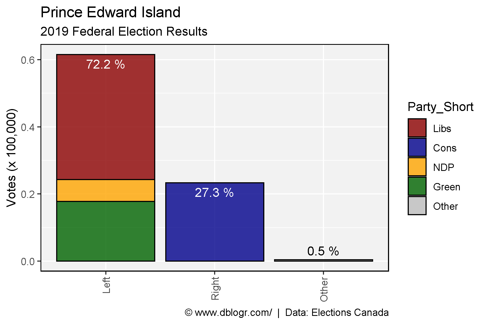
Newfoundland and Labrador
# Prep data
colors <- c("darkred", "darkblue", "orange", "darkgreen", "purple", "grey")
xx <- d2a %>% filter(Area == "Newfoundland and Labrador") %>%
reFactor() %>% summariseResults()
# Plot
mp <- gg_LeftRight(xx, "Newfoundland and Labrador")
ggsave("newfoundland_Labrador/election_2019_02_nl.png", mp, width = 6, height = 4)

Yukon
# Prep data
xx <- d2a %>% filter(Area == "Yukon") %>%
reFactor() %>% summariseResults()
mp <- gg_LeftRight(xx, "Yukon")
ggsave("yukon/election_2019_02_yt.png", mp, width = 6, height = 4)
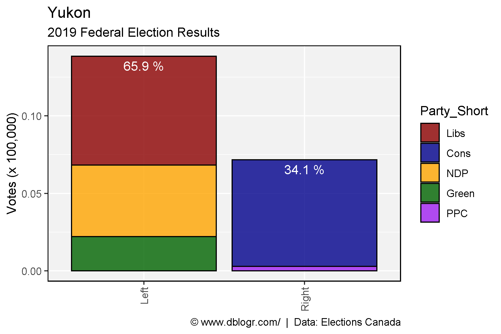
Northwest Territories
# Prep data
xx <- d2a %>% filter(Area == "Northwest Territories") %>%
reFactor() %>% summariseResults()
# Plot
mp <- gg_LeftRight(xx, "Northwest Territories")
ggsave("northwest_territories/election_2019_02_nt.png", mp, width = 6, height = 4)

Nunavut
# Prep data
xx <- d2a %>% filter(Area == "Nunavut") %>%
reFactor() %>% summariseResults()
# Plot
mp <- gg_LeftRight(xx, "Nunavut")
ggsave("nunavut/election_2019_02_nu.png", mp, width = 6, height = 4)
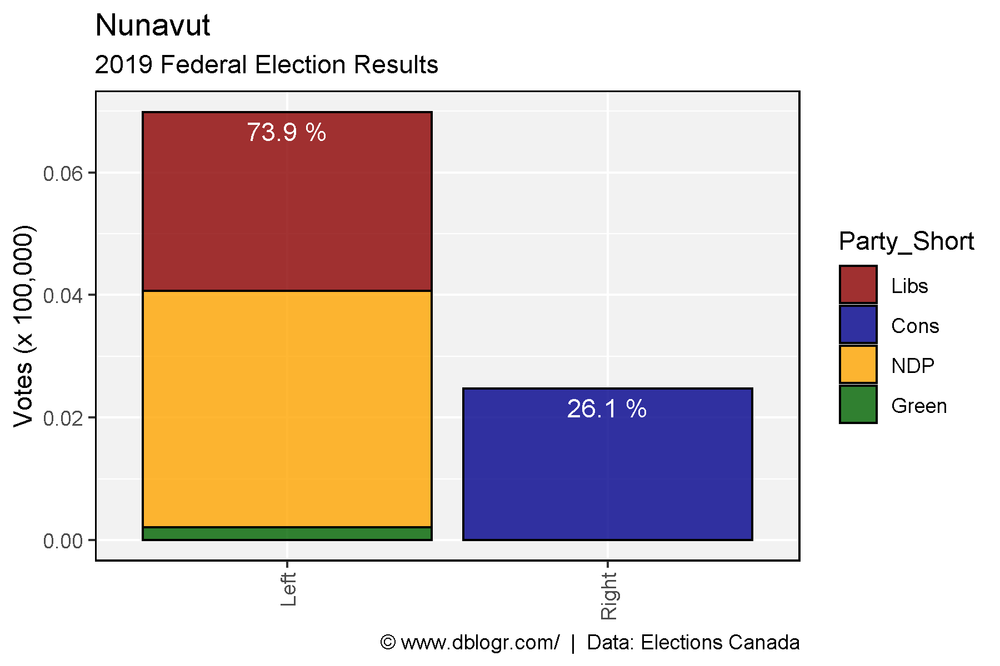
Districts
# Plot Distrcits by party
gg_Districts <- function(x, title = NULL, ymax = 15) {
ggplot(x, aes(x = Party_Short, y = Districts)) +
geom_bar(aes(fill = Party_Short), stat = "identity", color = "black", alpha = 0.8) +
geom_label(aes(label = paste0(Districts, "\n", `Percent of Districts`, "%")),
vjust = -0.1) +
scale_fill_manual(values = colors) +
coord_cartesian(ylim = c(0, ymax)) +
theme_dblogr(legend.position = "none", rotx = T) +
labs(title = title, y = "Districts", x = NULL,
subtitle = "2019 Federal Election Results",
caption = "\xa9 www.dblogr.com/ | Data: Elections Canada")
}
Canada
colors <- c("darkred", "darkblue", "orange", "lightblue", "darkgreen", "purple", "grey")
mp <- gg_Districts(d1a, ymax = 186)
ggsave("canada/election_2019_03_ca.png", mp, width = 6, height = 4)
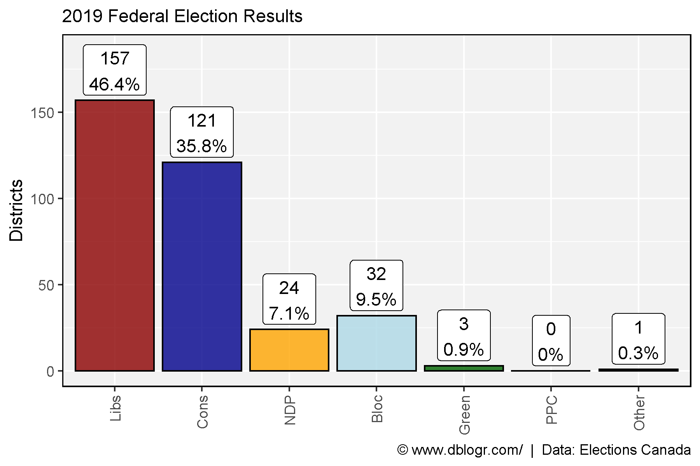
Eastern Canada
# Prep data
xx <- d2a %>% filter(SubRegion == "Eastern Canada") %>%
reFactor() %>% summariseResults()
# Plot
mp <- gg_Districts(xx, "Eastern Canada", ymax = 171)
ggsave("eastern_canada/election_2019_40_03_ce.png", mp, width = 6, height = 4)
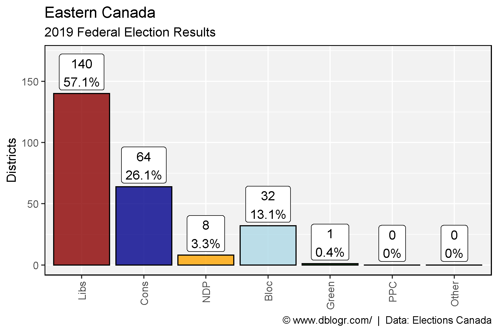
Western Canada
# Prep data
colors <- c("darkred", "darkblue", "orange", "darkgreen", "purple", "grey")
xx <- d2a %>% filter(SubRegion == "Western Canada") %>%
reFactor() %>% summariseResults()
# Plot
mp <- gg_Districts(xx, "Western Canada", ymax = 70)
ggsave("western_canada/election_2019_03_cw.png", mp, width = 6, height = 4)
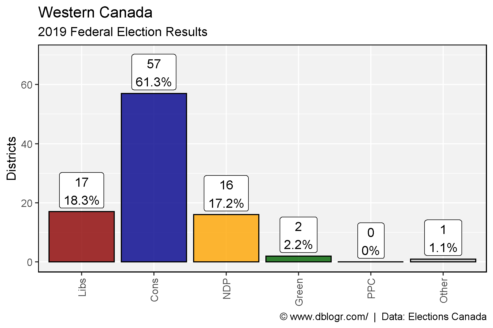
Prairie Agricultureal Districts
# Prep data
areas <- c("Rural Alberta", "Rural Saskatchewan", "Rural Manitoba")
nonag <- c("Banff--Airdrie", "Foothills", "Yellowhead",
"Fort McMurray--Cold Lak", "Grande Prairie--Mackenzie",
"Desnethé--Missinippi--Churchill River",
"Churchill--Keewatinook Aski")
xx <- d2a %>%
filter(Locality %in% areas) %>%
mutate(Locality = factor(Locality, levels = areas)) %>%
filter(!District %in% nonag) %>%
reFactor() %>% summariseResults()
# Plot
mp <- gg_Districts(xx, "Agricultural Prairie Districts", ymax = 27.5)
ggsave("prairie_ag/election_2019_03_ag.png", mp, width = 6, height = 4)
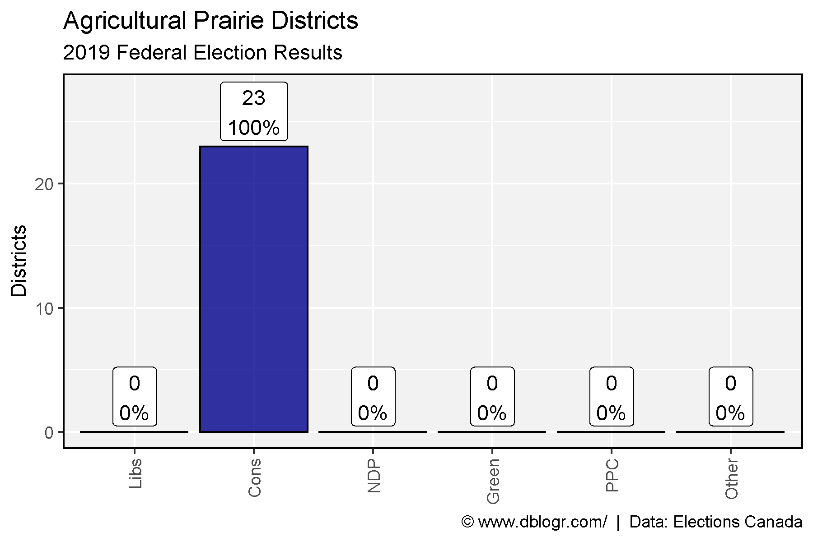
British Columbia
# Prep data
xx <- d2a %>% filter(Area == "British Columbia") %>%
reFactor() %>% summariseResults()
# Plot
mp <- gg_Districts(xx, "British Columbia", ymax = 20.5)
ggsave("british_columbia/election_2019_03_bc.png", mp, width = 6, height = 4)
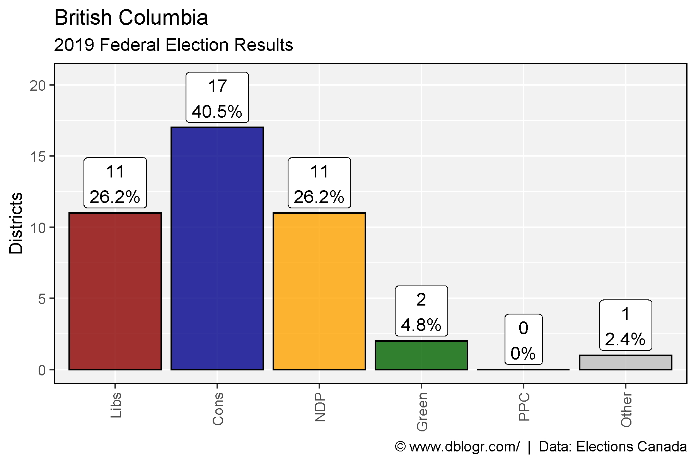
Alberta
# Prep data
xx <- d2a %>% filter(Area == "Alberta") %>%
reFactor() %>% summariseResults()
# Plot
mp <- gg_Districts(xx, "Alberta", ymax = 39.5)
ggsave("alberta/election_2019_03_ab.png", mp, width = 6, height = 4)
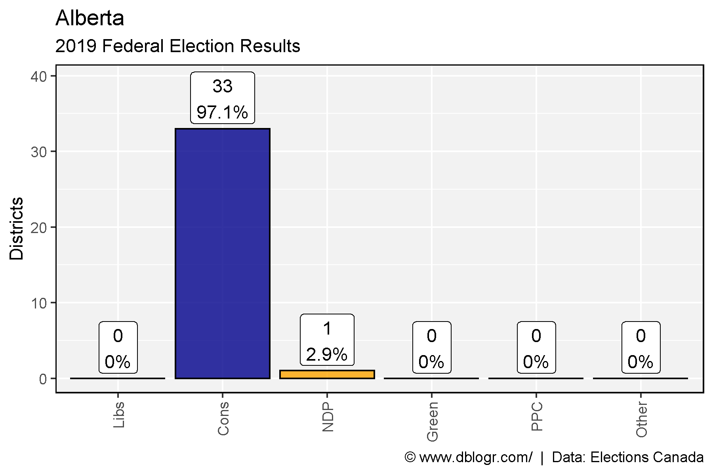
Saskatchewan
# Prep data
xx <- d2a %>% filter(Area == "Saskatchewan") %>%
reFactor() %>% summariseResults()
# Plot
mp <- gg_Districts(xx, "Saskatchewan", ymax = 17)
ggsave("saskatchewan/election_2019_03_sk.png", mp, width = 6, height = 4)
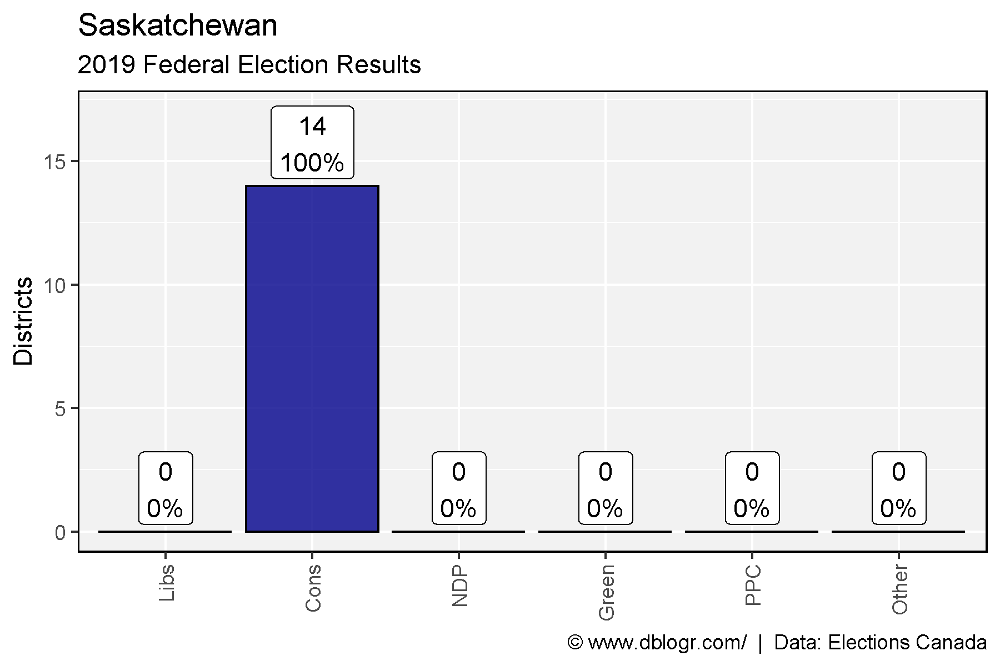
Manitoba
# Prep data
xx <- d2a %>% filter(Area == "Manitoba") %>%
reFactor() %>% summariseResults()
# Plot
mp <- gg_Districts(xx, "Manitoba", ymax = 8.5)
ggsave("manitoba/election_2019_03_mb.png", mp, width = 6, height = 4)
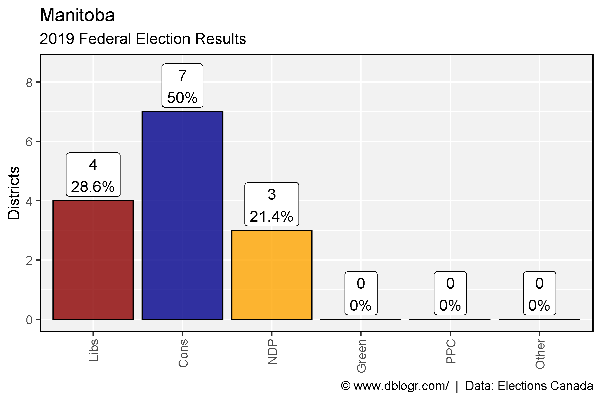
Ontario
# Prep data
xx <- d2a %>% filter(Area == "Ontario") %>%
reFactor() %>% summariseResults()
# Plot
mp <- gg_Districts(xx, "Ontario", ymax = 94)
ggsave("ontario/election_2019_03_on.png", mp, width = 6, height = 4)
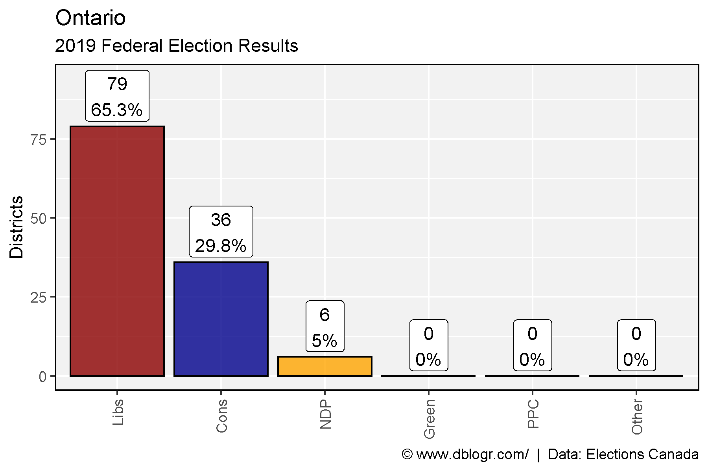
Quebec
# Prep data
colors <- c("darkred", "darkblue", "orange", "lightblue", "darkgreen", "purple", "grey")
xx <- d2a %>% filter(Area == "Quebec") %>%
reFactor() %>% summariseResults()
# Plot
mp <- gg_Districts(xx, "Quebec", ymax = 42)
ggsave("quebec/election_2019_03_qc.png", mp, width = 6, height = 4)
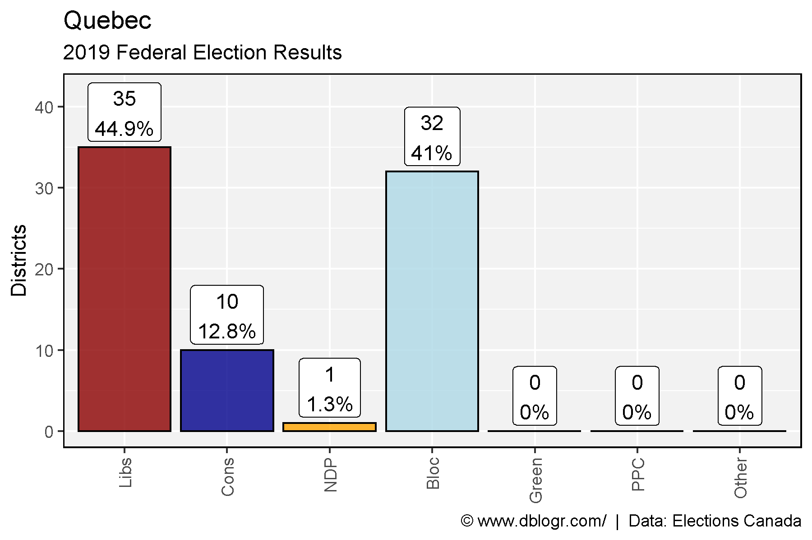
New Brunswick
# Prep data
colors <- c("darkred", "darkblue", "orange", "darkgreen", "purple", "grey")
xx <- d2a %>% filter(Area == "New Brunswick") %>%
reFactor() %>% summariseResults()
# Plot
mp <- gg_Districts(xx, "New Brunswick", ymax = 7.2)
ggsave("new_brunswick/election_2019_03_nb.png", mp, width = 6, height = 4)
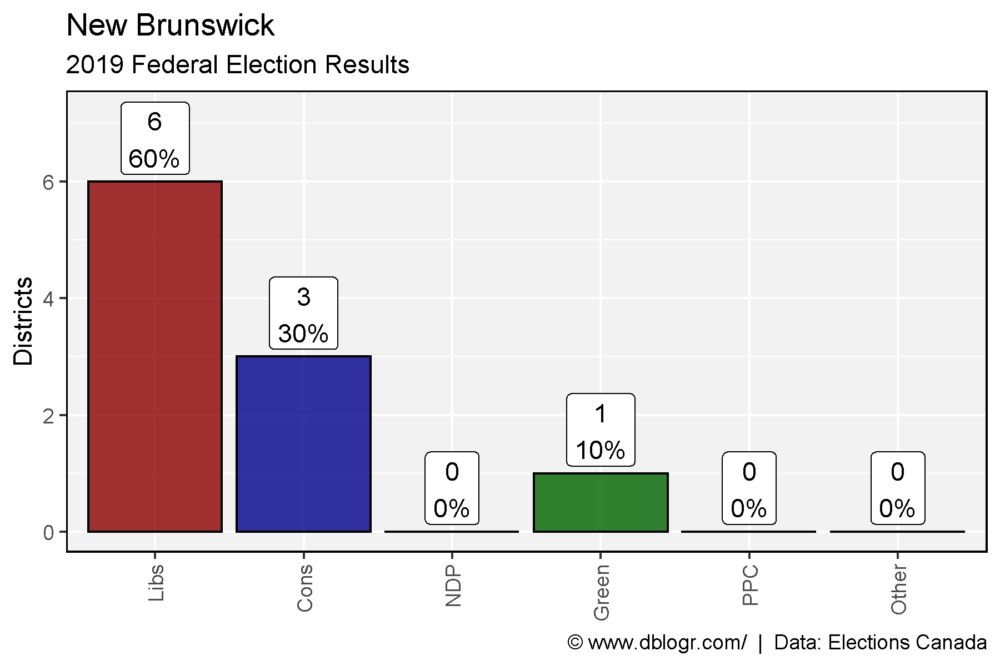
Nova Scotia
# Prep data
xx <- d2a %>% filter(Area == "Nova Scotia") %>%
reFactor() %>% summariseResults()
# Plot
mp <- gg_Districts(xx, "Nova Scotia", ymax = 12)
ggsave("nova_scotia/election_2019_03_ns.png", mp, width = 6, height = 4)
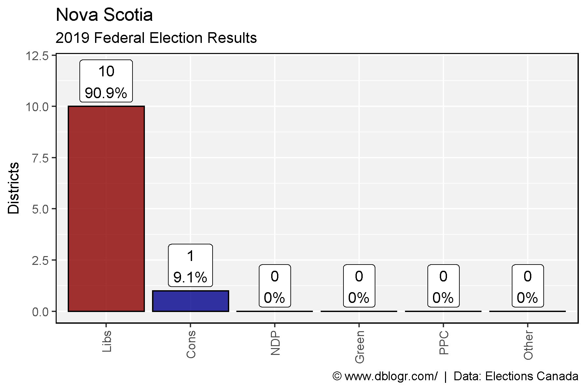
Prince Edward Island
# Prep data
colors <- c("darkred", "darkblue", "orange", "darkgreen", "grey")
xx <- d2a %>% filter(Area == "Prince Edward Island") %>%
reFactor() %>% summariseResults()
# Plot
mp <- gg_Districts(xx, "Prince Edward Island", ymax = 5)
ggsave("prince_edward_island/election_2019_03_pe.png", mp, width = 6, height = 4)
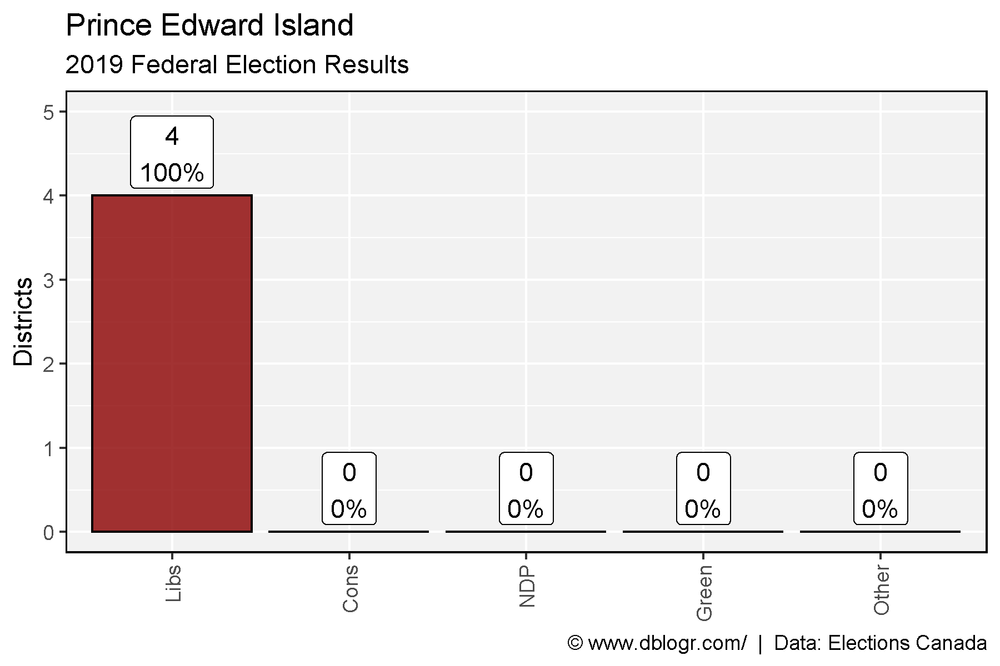
Newfoundland and Labrador
# Prep data
colors <- c("darkred", "darkblue", "orange", "darkgreen", "purple", "grey")
xx <- d2a %>% filter(Area == "Newfoundland and Labrador") %>%
reFactor() %>% summariseResults()
# Plot
mp <- gg_Districts(xx, "Newfoundland and Labrador", ymax = 7.2)
ggsave("newfoundland_Labrador/election_2019_03_nl.png", mp, width = 6, height = 4)

By Districts
# Plot votes by district
gg_ByDistrict <- function(x, title = NULL, ncol = 6) {
x1 <- x %>% group_by(District) %>% top_n(1, Votes)
ggplot(x, aes(x = Party_Short, y = Votes, fill = Party_Short)) +
geom_bar(stat = "identity", alpha = 0.8) +
geom_text(data = x %>% filter(`Percent of Votes` > 10),
aes(label = paste(`Percent of Votes`, "%")),
vjust = 1.2, size = 2, color = "white") +
geom_label(data = x1, x = 5.5, hjust = 1, vjust = 1, alpha = 0.3, size = 5,
aes(label = paste(`Percent of Votes`, "%"))) +
facet_wrap(District ~ ., scales = "free_y", ncol = ncol) +
scale_fill_manual(values = colors) +
theme_dblogr(legend.position = "none", rotx = T) +
labs(title = title, x = NULL,
subtitle = "2019 Federal Election Results",
caption = "\xa9 www.dblogr.com/ | Data: Elections Canada")
}
Prairie Agricultureal Districts
# Prep data
areas <- c("Rural Alberta", "Rural Saskatchewan", "Rural Manitoba")
nonag <- c("Banff--Airdrie", "Foothills", "Yellowhead",
"Fort McMurray--Cold Lak", "Grande Prairie--Mackenzie",
"Desnethé--Missinippi--Churchill River",
"Churchill--Keewatinook Aski")
xx <- d2a %>%
filter(Locality %in% areas) %>%
mutate(Locality = factor(Locality, levels = areas)) %>%
filter(!District %in% nonag) %>%
reFactor()
x1 <- xx %>% group_by(District) %>% top_n(1, Votes)
#
mp <- ggplot(xx, aes(x = Party_Short, y = Votes, fill = Party_Short)) +
geom_bar(stat = "identity", alpha = 0.8) +
geom_text(data = xx %>% filter(`Percent of Votes` > 10),
aes(label = paste(`Percent of Votes`, "%")),
vjust = 1.2, size = 2, color = "white") +
geom_label(data = x1, x = 6, hjust = 1, vjust = 1, alpha = 0.3, size = 5,
aes(label = paste(`Percent of Votes`, "%"))) +
facet_wrap(Locality+District ~ ., scales = "free_y", ncol = 6) +
scale_fill_manual(values = colors) +
theme(legend.position = "none",
axis.text.x = element_text(angle = 90, vjust = 0.5, hjust = 1)) +
theme_dblogr() +
labs(title = "2019 Federal Election Results in Agricultural Prairie Districts",
x = NULL, caption = "\xa9 www.dblogr.com/ | Data: Elections Canada")
ggsave("prairie_ag/election_2019_04_ag.png", mp, width = 16, height = 8)
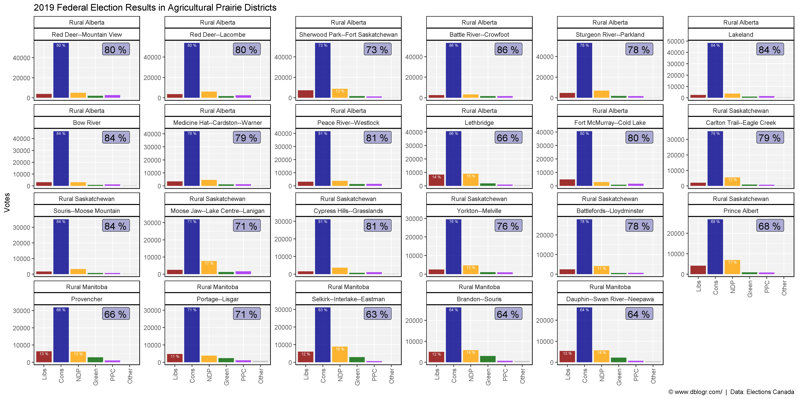
British Columbia
# Prep data
xx <- d2a %>% filter(Area == "British Columbia") %>%
reFactor()
# Plot
mp <- gg_ByDistrict(xx, "British Columbia", ncol = 6)
ggsave("british_columbia/election_2019_04_bc.png", mp, width = 15, height = 10.5)
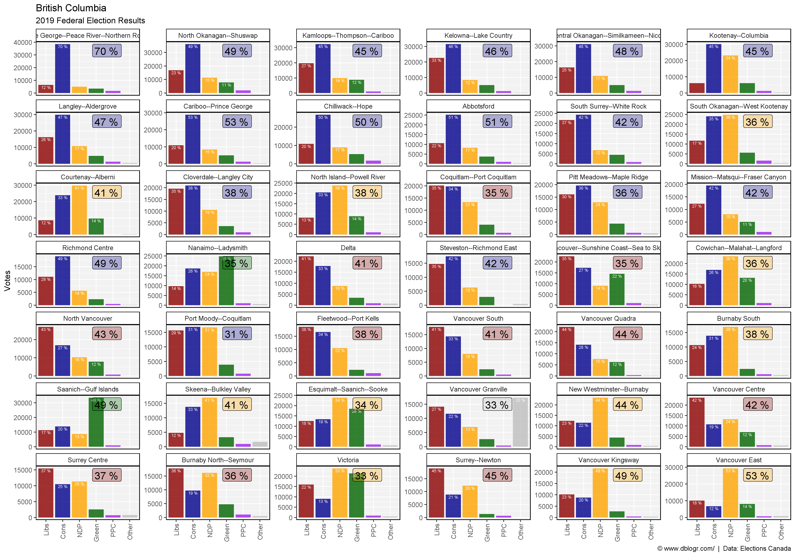
x1 <- xx %>% filter(Locality == "Urban BC")
mp <- gg_ByDistrict(x1, "Urban BC", ncol = 7)
ggsave("british_columbia/election_2019_04_bc_urban.png", mp, width = 17.5, height = 6)
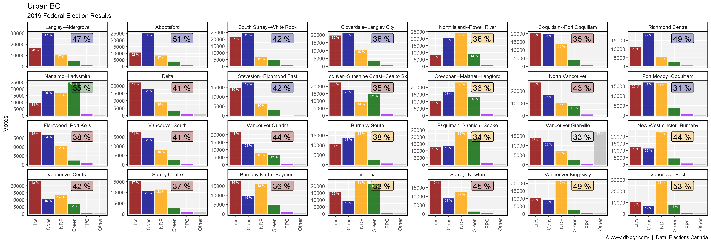
x1 <- xx %>% filter(Locality == "Rural BC")
mp <- gg_ByDistrict(x1, "Rural BC", ncol = 5)
ggsave("british_columbia/election_2019_04_bc_rural.png", mp, width = 12.5, height = 5)
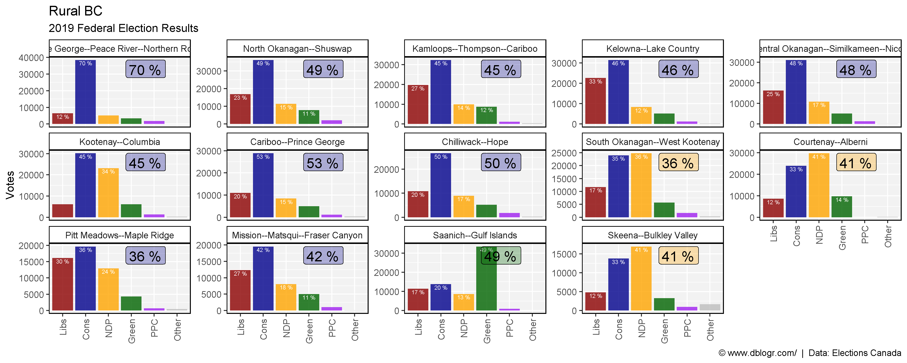
Alberta
# Prep data
xx <- d2a %>% filter(Area == "Alberta") %>%
reFactor()
# Plot
mp <- gg_ByDistrict(xx, "Alberta", ncol = 7)
ggsave("alberta/election_2019_04_ab.png", mp, width = 17.5, height = 7.5)
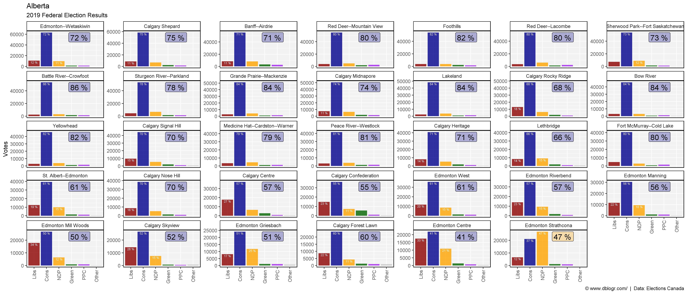
x1 <- xx %>% filter(Locality == "Calgary")
mp <- gg_ByDistrict(x1, "Calgary", ncol = 5)
ggsave("alberta/election_2019_04_ab_calgary.png", mp, width = 12.5, height = 4)
x1 <- xx %>% filter(Locality == "Edmonton")
mp <- gg_ByDistrict(x1, "Edmonton", ncol = 5)
ggsave("alberta/election_2019_04_ab_edmonton.png", mp, width = 12.5, height = 4)
x1 <- xx %>% filter(Locality == "Rural Alberta")
mp <- gg_ByDistrict(x1, "Rural Alberta", ncol = 5)
ggsave("alberta/election_2019_04_ab_rural.png", mp, width = 12.5, height = 5)
Saskatchewan
# Prep data
xx <- d2a %>% filter(Area == "Saskatchewan") %>%
reFactor()
# Plot
mp <- gg_ByDistrict(xx, "Saskatchewan", ncol = 4)
ggsave("saskatchewan/election_2019_04_sk.png", mp, width = 10, height = 6)
x1 <- xx %>% filter(Locality == "Rural Saskatchewan")
mp <- gg_ByDistrict(x1, "Rural Saskatchewan", ncol = 4)
ggsave("saskatchewan/election_2019_04_sk_rural.png", mp, width = 10, height = 4)
x1 <- xx %>% filter(Locality == "Urban Saskatchewan")
mp <- gg_ByDistrict(x1, "Urban Saskatchewan", ncol = 3)
ggsave("saskatchewan/election_2019_04_sk_urban.png", mp, width = 8, height = 4)

Manitoba
# Prep data
xx <- d2a %>% filter(Area == "Manitoba") %>%
reFactor()
# Plot
mp <- gg_ByDistrict(xx, "Manitoba", ncol = 4)
ggsave("manitoba/election_2019_04_mb.png", mp, width = 10, height = 6)
# Plot
x1 <- xx %>% filter(Locality == "Rural Manitoba")
mp <- gg_ByDistrict(x1, "Rural Manitoba", ncol = 3)
ggsave("manitoba/election_2019_05_mb_rural.png", mp, width = 8, height = 4)
x1 <- xx %>% filter(Locality == "Winnipeg")
mp <- gg_ByDistrict(x1, "Winnipeg", ncol = 4)
ggsave("manitoba/election_2019_06_mb_winnipeg.png", mp, width = 10, height = 4)
Ontario
# Prep data
xx <- d2a %>% filter(Area == "Ontario") %>%
reFactor()
# Plot
mp <- gg_ByDistrict(xx, "Ontario", ncol = 11)
ggsave("ontario/election_2019_04_on.png", mp, width = 27.5, height = 16.5)
Quebec
# Prep data
colors <- c("darkred", "darkblue", "orange", "lightblue", "darkgreen", "purple", "grey")
xx <- d2a %>% filter(Area == "Quebec") %>%
reFactor()
# Plot
mp <- gg_ByDistrict(xx, "Quebec", ncol = 10)
ggsave("quebec/election_2019_04_qc.png", mp, width = 25, height = 12)
New Brunswick
# Prep data
colors <- c("darkred", "darkblue", "orange", "darkgreen", "purple", "grey")
xx <- d2a %>% filter(Area == "New Brunswick") %>%
reFactor()
# Plot
mp <- gg_ByDistrict(xx, "New Brunswick", ncol = 5)
ggsave("new_brunswick/election_2019_04_nb.png", mp, width = 12.5, height = 4)
Nova Scotia
# Prep data
xx <- d2a %>% filter(Area == "Nova Scotia") %>%
reFactor()
# Plot
mp <- gg_ByDistrict(xx, "Nova Scotia", ncol = 6)
ggsave("nova_scotia/election_2019_04_ns.png", mp, width = 15, height = 4)
Prince Edward Island
# Prep data
colors <- c("darkred", "darkblue", "orange", "darkgreen", "grey")
xx <- d2a %>% filter(Area == "Prince Edward Island") %>%
reFactor()
# Plot
mp <- gg_ByDistrict(xx, "Prince Edward Island", ncol = 4)
ggsave("prince_edward_island/election_2019_04_pe.png", mp, width = 10, height = 3)
Newfoundland and Labrador
# Prep data
colors <- c("darkred", "darkblue", "orange", "darkgreen", "purple", "grey")
xx <- d2a %>% filter(Area == "Newfoundland and Labrador") %>%
reFactor()
# Plot
mp <- gg_ByDistrict(x1, "Newfoundland and Labrador", ncol = 4)
ggsave("newfoundland_Labrador/election_2019_04_nl.png", mp, width = 10, height = 4)

Northern Canada